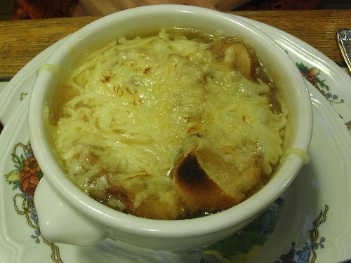

Sopa de cebolla (4 personas)

- Ingredientes:
- 1 Kg. de cebollas.
- 2 l. de caldo de carne.
- 100 gr. mantequilla.
- 1 cucharada de harina.
- 100 gr. de queso emmental suizo o gruyére rallado.
- Pan tostado en rebanadas.
- 1 hoja de laurel.
- Tomillo.
- Pimienta.
- Proceso:
- Pelar y partir las cebollas en rodajas finas.
- Pelar y partir las cebollas en rodajas finas.
- Rehogarlas con la mantequilla, sal y pimienta a fuego lento hasta que estén transparentes sin dorarse.
- Añadir la harina sin dejar de remover.
- Ponerlo en una cazuela con el caldo, el tomillo y el laurel.
- Dejar cocer a fuego lento durante unos 15 minutos.
- Poner las rebanadas de pan encima, espolvorear el queso y gratinar al horno.